第 0 轮 · 自由做001-r00-free
满舱而归 · 每一轮单独保存、能单独玩；和上一轮比，看这一轮有没有让游戏变好。
第 1 段做完了：能玩的核心切片，美术按已拍板的方案做
打开方式：双击 index.html，用 Chrome 打开。不用服务器，也不联网。
你最在意的那条：美术方案和技能都写进了方案
核心切片设计.md 第一节就是这件事，写了三点：
- 美术用 design.md 已拍板的方案：分零件生成 + 代码拼装 + 零件分层动画（hi-bit 路线）。这一条比「美术全部用代码画、不用外部生图工具」优先。
-
出图、处理、拼装、动画都走
pixel-character-design技能的 hi-bit 路线：出零件用技能里的 gen-parts.sh 和 codex-imagegen，拼装用 hibit-kit.js，构建和截图用 hibit_build.py。 -
这一轮读不到技能本体，所以直接用
美术/里按方案做好的东西：零件、原样的hibit-kit.js，以及从技能的构建页和运行页改出来的tools/build.html和game/art.js。
美术的具体做法：
- 每个场景都从源图直接缩到 640×360 的像素格，每个场景一套色板（大部分 96 色，副本 64 色）。
- 自动拼装：船首像按轮廓贴到船头，货堆和炮按脚下那段船舷的高度放，绳子从气囊的铜环拉到甲板。
- 动画全靠零件分层，每秒 12 帧：螺旋桨 4 帧压扁转动、气囊比船身慢半拍浮动、甲板货一层层堆高、热度火光、被击中闪白。
-
重建全部美术只要一条命令：
node tools/build.mjs，约 4 秒，无头运行。
切片里能玩到的一整圈
- 开场 60 秒：被海盗追，按 Q 扔货，进港「冒尖而归」，木筏散架。
- 船坞：在侧面图上把模块一块块装回去，升力、推重比、速度档、甲板能堆几箱当场变化，有出航检查。
- 大地图：出航到城镇进货。第一箱一上船，速度档就从「快」掉到「中」，船身一沉，配一声闷响。热度到了会被盯上：可以扔货拖时间、钻进安全圈，或被追上时二选一（开战 / 认栽）。
- 副本：打海盗巡逻船，进竖版射击，自动开火，有冲刺、技能和擦弹充能。被打中时甲板上的箱子会飞出去，敌船的货也要飞过去接；打完是战后面板。
- 回家：货箱一箱箱滚进仓库，打上满舱 / 冒尖标。
- 夜市：摆摊、敲铃开市，客人带耐心条，船长去摊位拿货（一次最多两单）、回柜台递，有小费。还有大客户订单，打烊时口碑拆开写。然后进入第二天。
- 另外做了：造驮兽货船（甲板能堆 6–8 箱），以及被击落 → 留 1 件 → 沉货点 → 打跑守货的海盗 → 打捞。
测试情况
所有测试都在无头 Chrome 里跑，不弹窗口：
-
从标题一路自动玩到第二天早上，没有报错。真实画面存了 18 张，在
截图/。 - 被追、被击落、订单、驮兽、热度这几条流程分别单独跑过。
- 七个场景各乱按 120 次，0 个运行时错误。
主要假设（不问你，都写在 notes.md）
- 范围：只做木筏和驮兽两种底模、7 种模块。据点、首领、乱流、迷雾、海上事件、招牌货、伙计、建造模式、多人都留到后面。
- 压缩的数：地图航程压到设计的约 1/4–1/3，被盯上的平均间隔压到 1/4，好让 10 分钟内就能碰到追逐。
- 自己定的：连发炮的技能 design.md 没写，我定成「铜雨」；冲刺的参数也是我定的。
- 平台：这一段只做了网页版，Windows 和 macOS 打包放到后面。联机还没做，但改状态的操作都写成了改一个 JSON 存档的纯函数，以后可以直接当主机权威的指令用。
- 没往网上推：没建远程仓库，也没部署。
占位和已知问题
有一批是用已有零件拼的占位，以后按方案用技能出图、重跑构建就能替换，清单在 notes.md：
- 大地图的海图图块，以及铁桅镇、砂岩堡（现在是晴岚港抠图换色）。
- 模块图标、残骸、精英海盗。
- 船长只有左右两个朝向；音效是现场合成的。
已知问题：
- 船坞的位置框会盖住一部分船。
- 夜市船长跑一趟 2–3 秒，比设计的 4–6 秒快，切片里压力偏小。
- 副本里直接关掉页面，下次会回到开打前（设计要求按被击落算）。
文件都在 这一轮的文件夹：
- index.html
- 核心切片设计.md
- notes.md
- 截图/
- game/
- assets/sprites.js
- tools/（构建和自动试跑脚本）
- design.md（原样未改，SHA 一致）
截图（这一轮新拍或改过的 18 张）
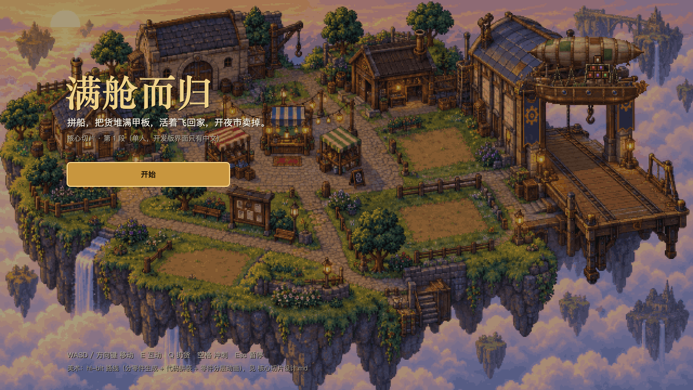
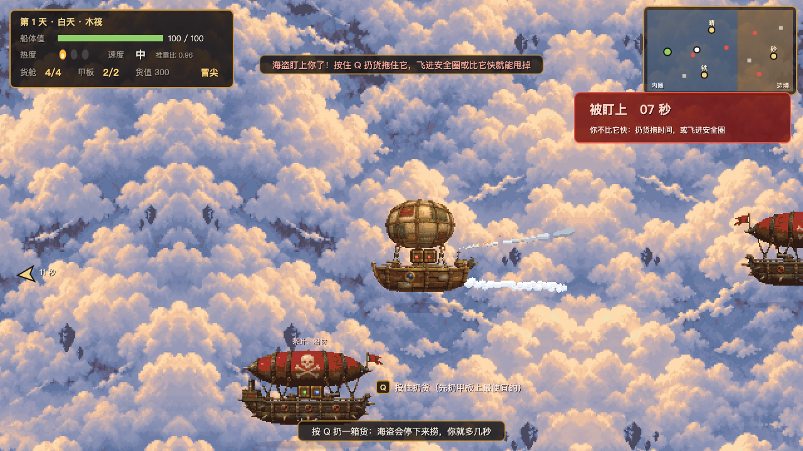
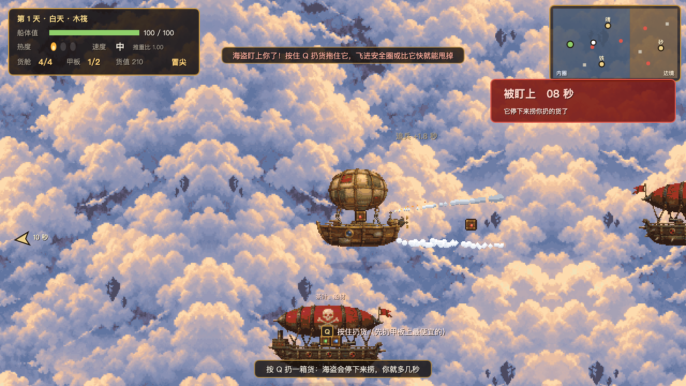

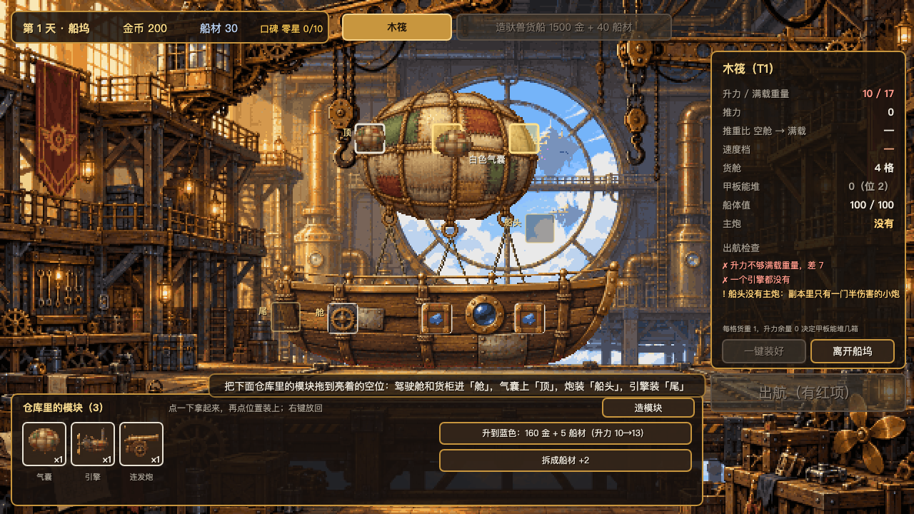
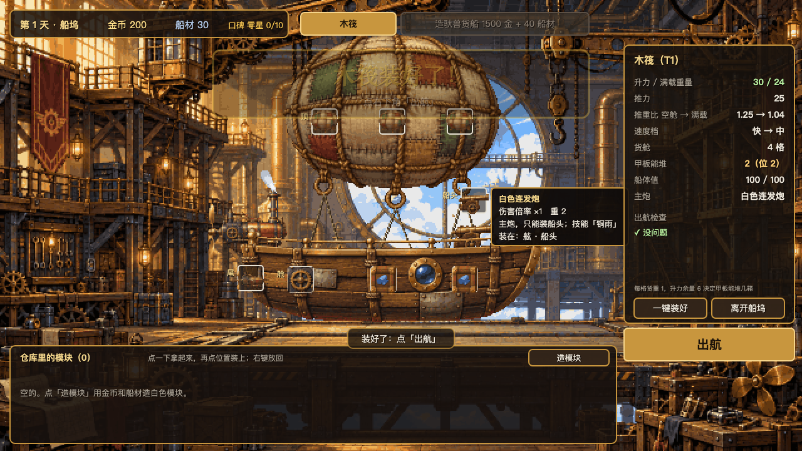
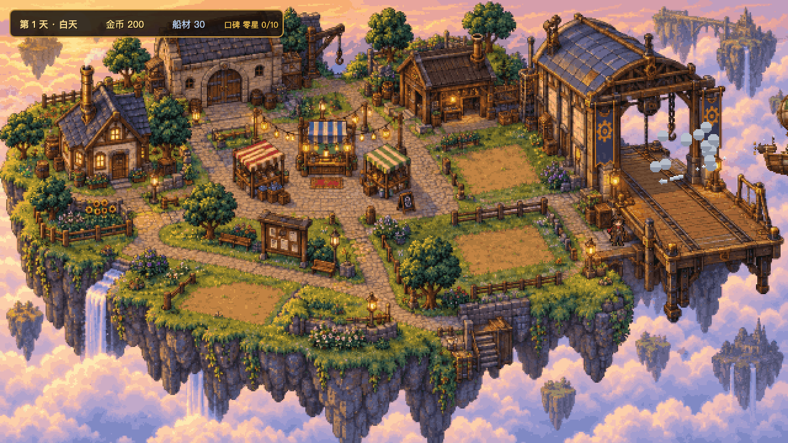
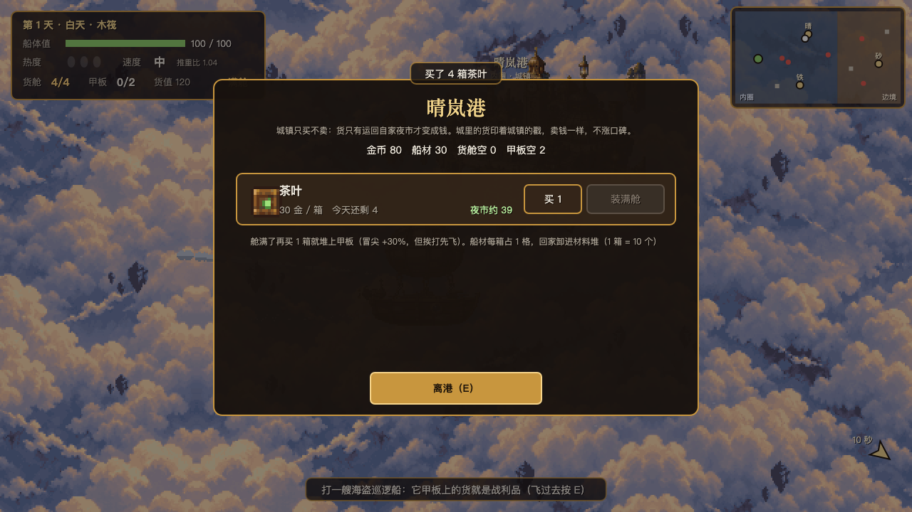
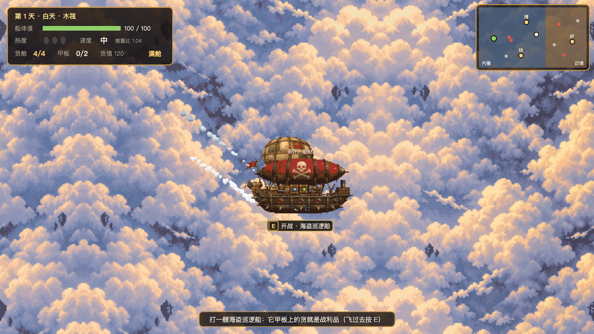
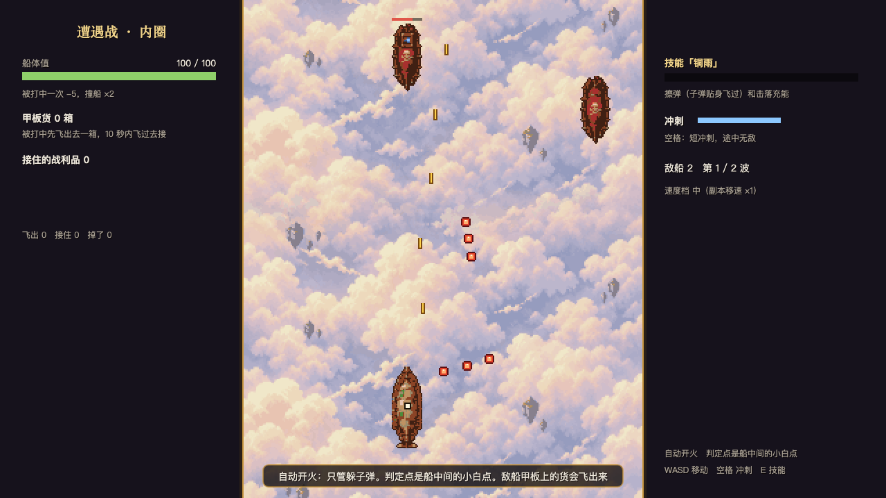
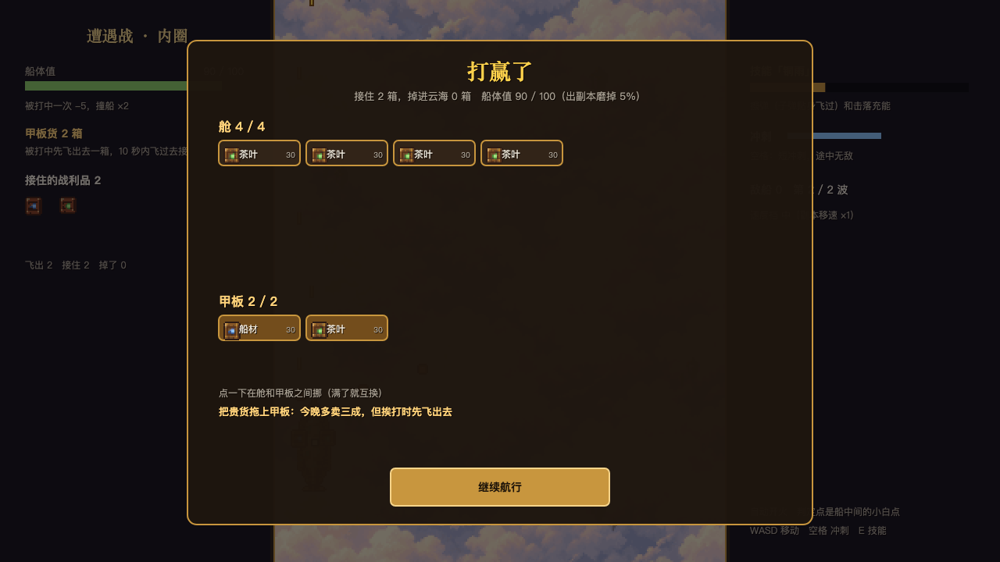
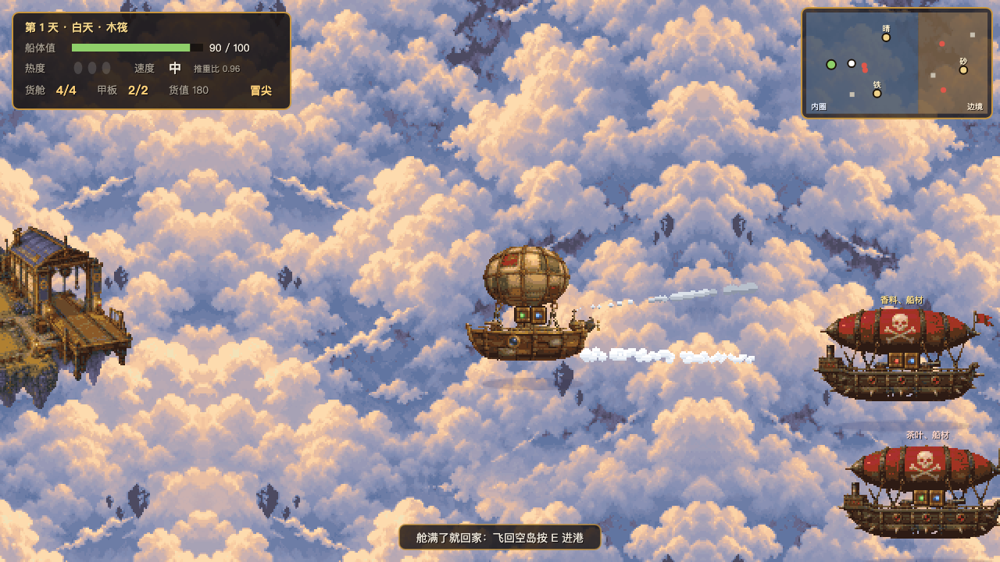
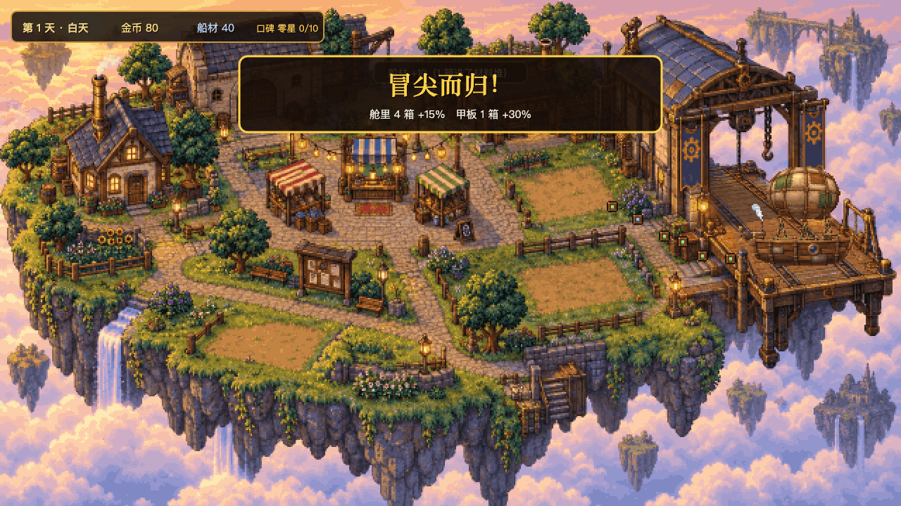
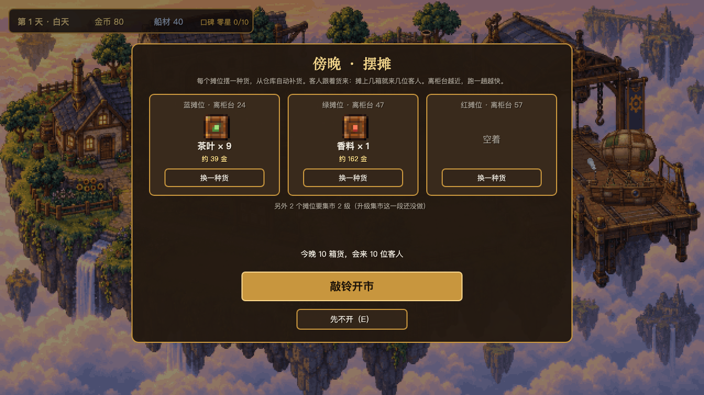
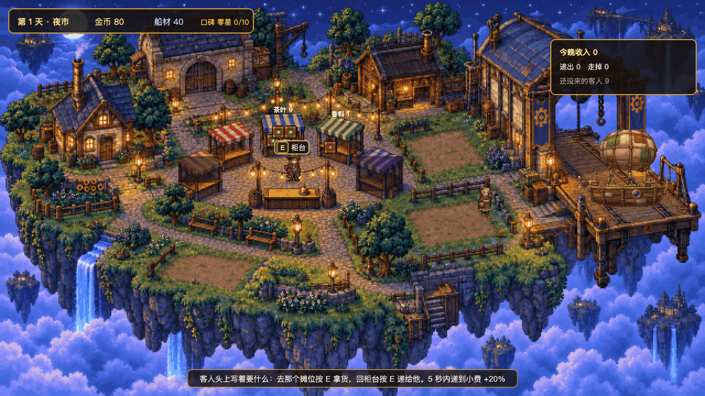
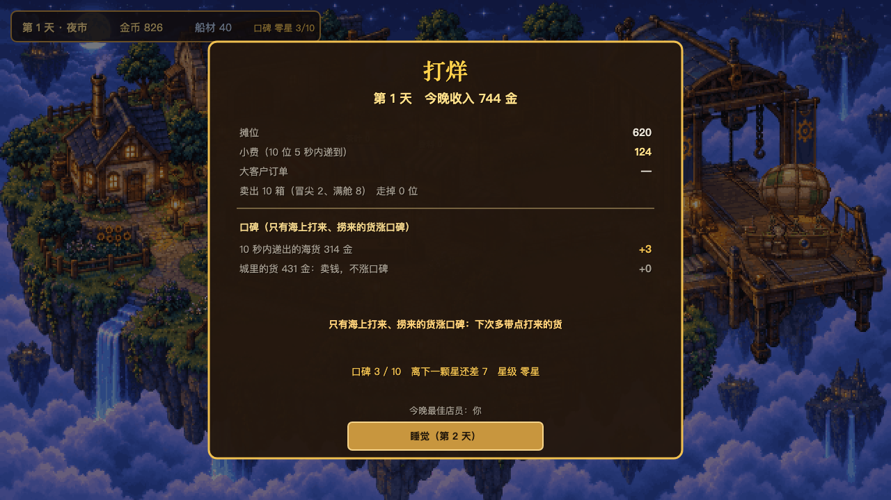
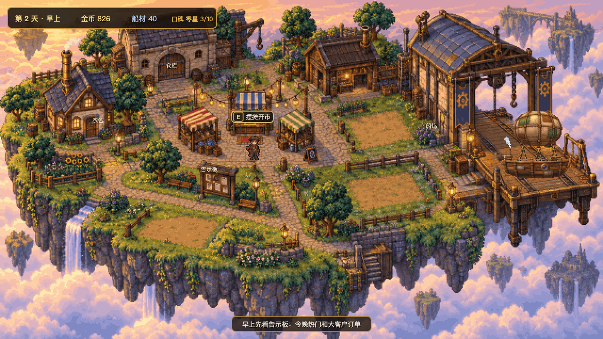
用时
用时 1 小时 55 分 · 133 步 · 输出 147k token · 重读上下文 39.7M token · 做完于 2026-10-13 07:38
改了哪些文件（比起起点：新加 40 · 改动 0 · 删掉 0）
＋ assets/sprites.js
＋ design.md
＋ game/art.js
＋ game/data.js
＋ game/main.js
＋ game/scene_dock.js
＋ game/scene_island.js
＋ game/scene_map.js
＋ game/scene_market.js
＋ game/scene_shmup.js
＋ game/sfx.js
＋ game/state.js
＋ game/test.js
＋ game/ui.js
＋ game/util.js
＋ index.html
＋ notes.md
＋ tools/build.html
＋ tools/build.mjs
＋ tools/cdp.mjs
＋ tools/play.mjs
＋ tools/plays/beast.mjs
＋ tools/plays/chase.mjs
＋ tools/plays/day1.mjs
＋ tools/plays/dock.mjs
＋ tools/plays/down.mjs
＋ tools/plays/full.mjs
＋ tools/plays/heat.mjs
＋ tools/plays/market.mjs
＋ tools/plays/night1.mjs
＋ tools/plays/opening.mjs
＋ tools/plays/order.mjs
＋ tools/plays/soak.mjs
＋ tools/probe.html
＋ tools/probe.mjs
＋ tools/sheet.html
＋ tools/sheet.mjs
＋ tools/shot.mjs
＋ tools/zoom.py
＋ 核心切片设计.md
这一轮收到的 prompt
# 满舱而归 · 对比模式简报 设计文档：`design.md`（在你的文件夹里；SHA-256 bb5ff91e4492cd339ec953b4652e8cd1e6f118db0236080ea319787289bc23b1）。这份文档是用户和设计师一起定下的，是这个游戏的设计依据。 用户对自己每个游戏都有的要求： - Steam 上的 PC 游戏，横屏，网页技术做，打包成 Windows 和 macOS 版。 - 美术全部用代码画，默认像素风，不用任何外部生图工具。 - 开发期界面只做中文，上线时再加语言。 - 试玩版和正式版都有在线联机。 - 代码放 GitHub 时一律建私有库，不建公开库，不用 GitHub Pages 发网页。 工作方式： - 不问用户任何问题：自己决定，把每个假设写进 `notes.md`。 - 交付物放在你自己的文件夹里：能在浏览器里玩的 `index.html`（或能打开的构建）、设计文档、`notes.md`（试什么、哪些是占位、做了哪些假设）。 - 不要读别的文件夹里的东西，也不要去找别的会话的结果。 - 本机：Chrome 在 /Applications/Google Chrome.app，Node 和 Python 3 在 PATH 上。任何自动试跑都要无头，不要在用户屏幕上弹窗口。 - 这一段不往网上推送或发布任何东西（不建远程仓库、不部署），都留在本机。 - 没有时间和轮数限制，做完为止。 这一段的目标：第 1 段：根据设计文档完成设计并做出一个能玩的核心切片——玩家最常做的那件事完整走一圈，手感是真的，美术是第一版。做完停下。 简报和设计文档都在你当前的文件夹里。 用户这次的原话（这一轮最优先的事）： 「写到方案里，然后方案里要说明 用这个美术方案 走 用这个技能」——指的是设计文档「画面风格」里的「美术方案（已拍板）」：美术按分零件生成 + 代码拼装 + 零件分层动画做，这一条比上面「美术全部用代码画、不用外部生图工具」优先。这一轮读不到那个技能：按方案做好的零件、工具和说明都在你文件夹的 美术/ 里（先读 美术/说明.md），直接用；设计文档里的图在 设计文档图/。